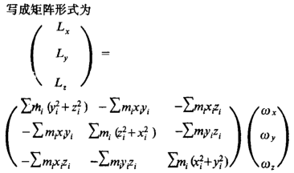

惯性张量（inertia tensor）I：表示刚体绕通过该点任一轴的转动惯量的大小，是二阶对称张量（惯性的坐标分量是矩阵，用 ${\bf{I}}$ 表示，角动量 $\vec L = {\bf{I}}\vec \omega $ ，角动量不一定和 ${\vec \omega }$ 同方向 ），用惯性张量可以求得物体在任意坐标系下对于任意轴的转动惯量，关于惯性张量的分量、角动量的推导和平行轴定理的证明详见维基百科：https://zh.wikipedia.org/wiki/%E8%BD%89%E5%8B%95%E6%85%A3%E9%87%8F#%E5%B0%8E%E5%BC%95

以一个旋转中心点（求刚体旋转动能时以质心作为旋转点和原点）为原点的坐标系统 ${G_{xyz}}$ ，求任意一个过原点的轴（设 ${\vec \eta }$ 是轴的单位向量， ${\vec \eta }$ 不一定和 ${\vec \omega }$ 同方向）的转动惯量I可用如下公式：
$I = \left( {\begin{array}{*{20}{c}}
{{\eta _x}}&{{\eta _y}}&{{\eta _z}}
\end{array}} \right){\bf{I}}\left( {\begin{array}{*{20}{c}}
{{\eta _x}}\\
{{\eta _y}}\\
{{\eta _z}}
\end{array}} \right) = \left( {\begin{array}{*{20}{c}}
{{\eta _x}}&{{\eta _y}}&{{\eta _z}}
\end{array}} \right)\left( {\begin{array}{*{20}{c}}
{\int {\left( {{y^2} + {z^2}} \right)dm} }&{\int {\left( { - xy} \right)dm} }&{\int {\left( { - xz} \right)dm} }\\
{\int {\left( { - xy} \right)dm} }&{\int {\left( {{x^2} + {z^2}} \right)dm} }&{\int {\left( { - yz} \right)dm} }\\
{\int {\left( { - xz} \right)dm} }&{\int {\left( { - yz} \right)dm} }&{\int {\left( {{x^2} + {y^2}} \right)dm} }
\end{array}} \right)\left( {\begin{array}{*{20}{c}}
{{\eta _x}}\\
{{\eta _y}}\\
{{\eta _z}}
\end{array}} \right)$
对应的转动动能为 $K = \frac{1}{2}{{\vec \omega }^T}{\bf{I}}\vec \omega = \frac{1}{2}\vec \omega \cdot \vec L$
以上推导请参考维基百科：https://zh.wikipedia.org/wiki/%E8%BD%89%E5%8B%95%E6%85%A3%E9%87%8F#%E5%8B%95%E8%83%BD
一个质点在 ${\vec \eta }$ 和 ${\vec \omega }$ 同方向的情形下，并且找到一种坐标系使 ${\vec r}$ 、 ${\vec v}$ 、 ${\vec \omega }$ 三者正交，则有：
$\vec L = \vec r \times \vec p = \vec r \times \left( {m\vec v} \right) = \vec r \times \left( {\vec \omega \times \vec r} \right)m = m{r^2}\vec \omega = I\vec \omega $
惯性张量的分量 ${\bf{I}}$ 和转动惯量 I 的关系：
根据 $I = \left( {\begin{array}{*{20}{c}}
{{\eta _1}}&{{\eta _2}}&{{\eta _3}}
\end{array}} \right){\bf{I}}\left( {\begin{array}{*{20}{c}}
{{\eta _1}}\\
{{\eta _2}}\\
{{\eta _3}}
\end{array}} \right)$ 可以得出 $I = {I_{ij}}{\eta _i}{\eta _j}$ ，只要证明在任意笛卡尔直角坐标系下有 $I = {I_{ij}}{\eta _i}{\eta _j} = I{'_{kl}}\eta {'_k}\eta {'_l}$ ，则 I 就是二阶张量，可以用平行轴定理的证明来证明这个。
刚体转动动能 ${E_k}$ 的简单推导：
$$\begin{split}
{E_k} &= \frac{1}{2}m\left( {\vec v \cdot \vec v} \right) \\
&= \frac{1}{2}m\vec v \cdot \left( {\vec \omega \times \vec r} \right) \\
&= \frac{1}{2}m\vec \omega \cdot \left( {\vec r \times \vec v} \right) \\
&= \frac{1}{2}\vec \omega \cdot \vec L \\
&= \frac{1}{2}\vec \omega \cdot \left( {I\vec \omega } \right) \\
\end{split} $$